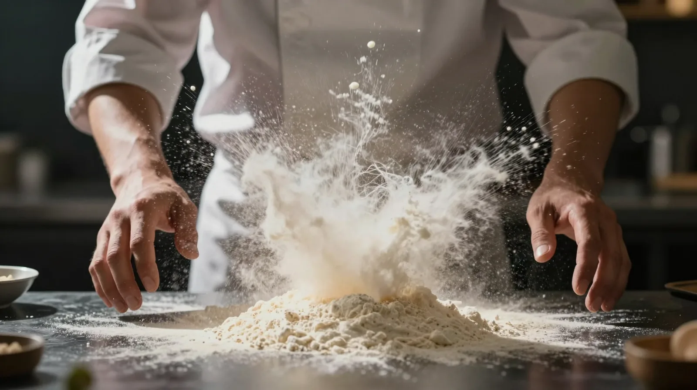
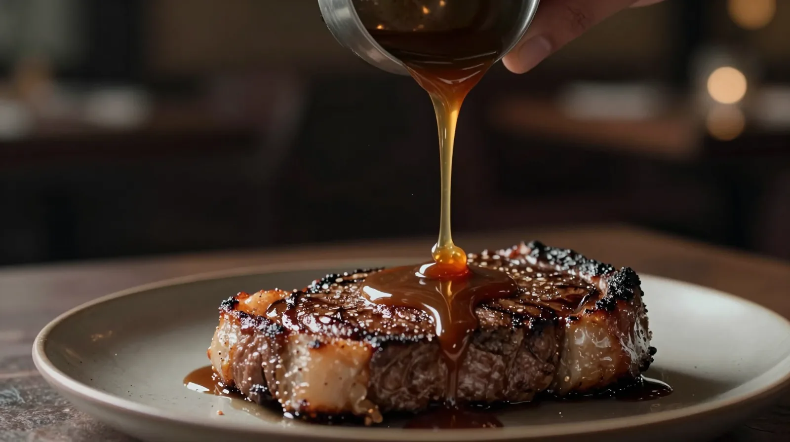
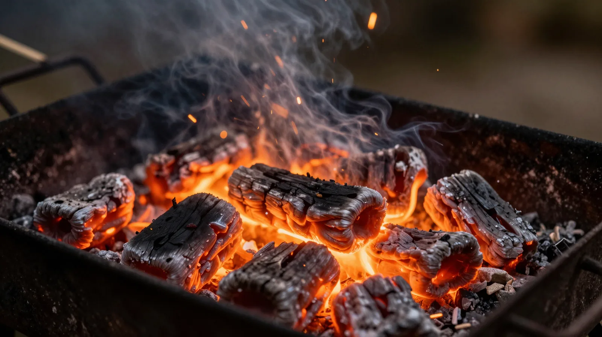
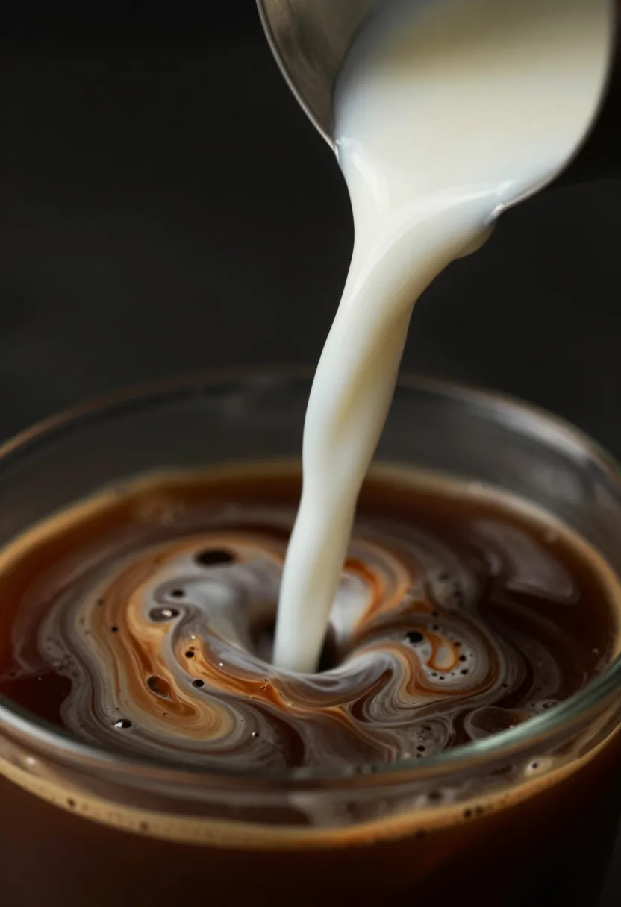
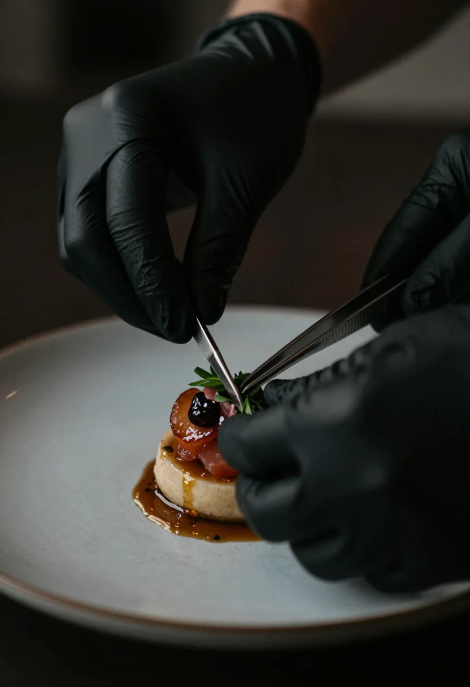
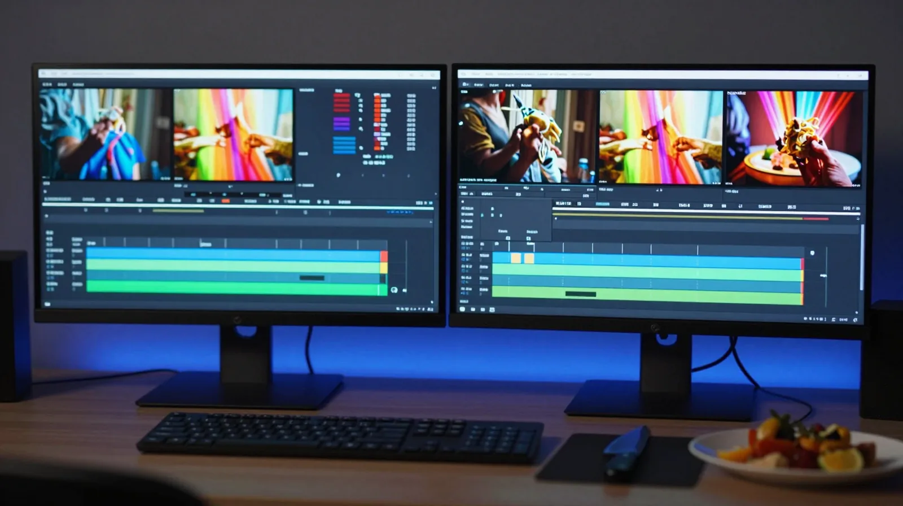
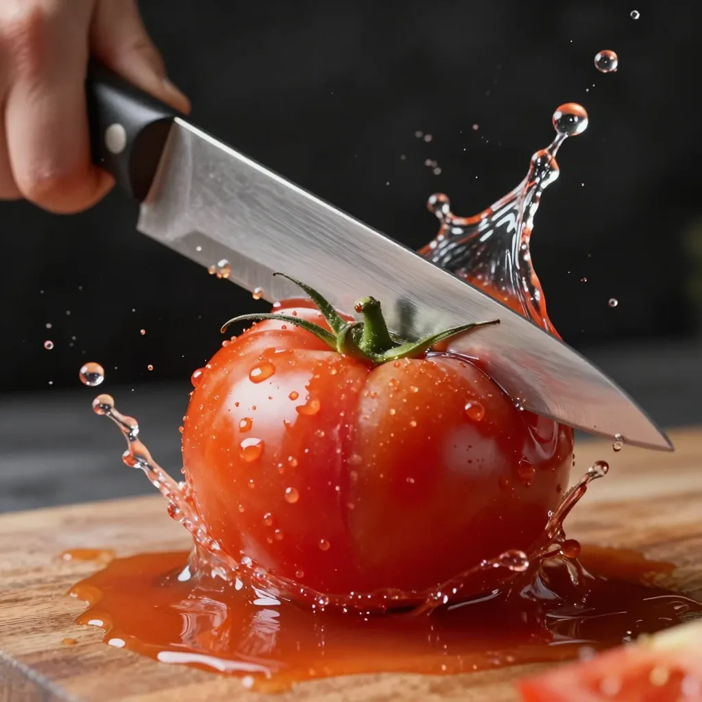
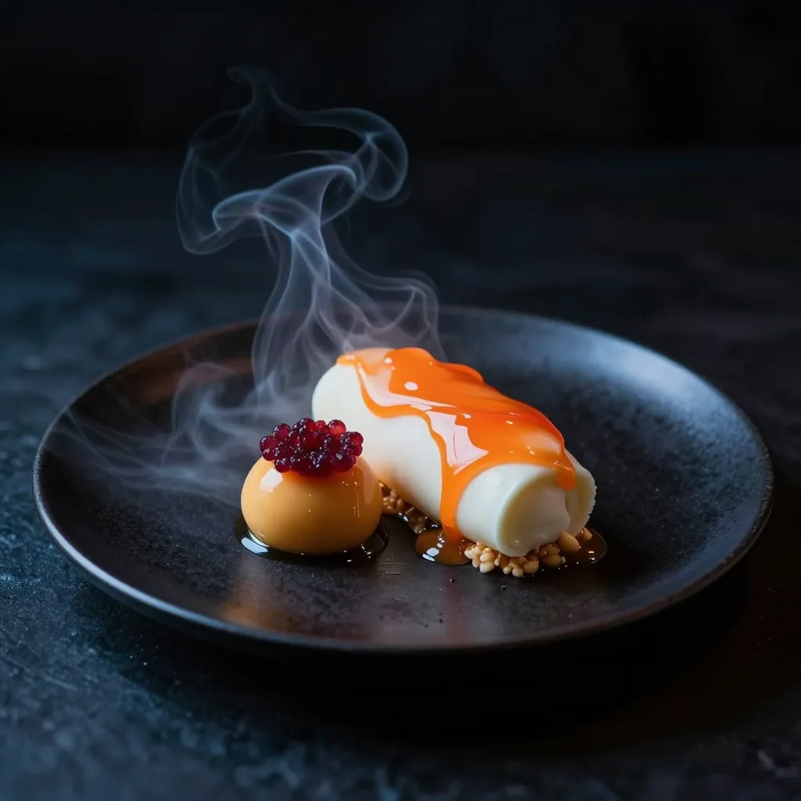
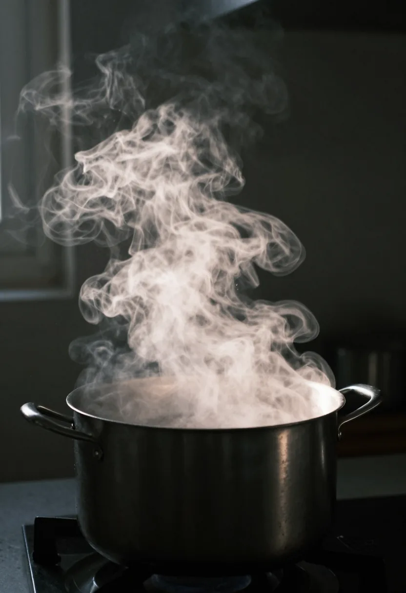
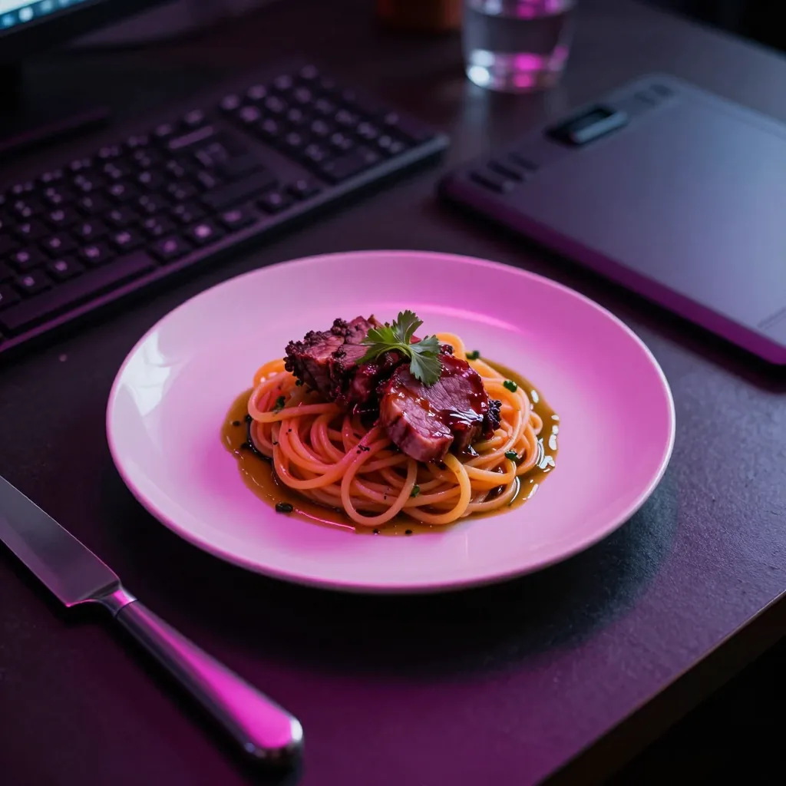

MutfakHareket
Ümit Kavi — mutfak sanatları, barista zanaatı ve After Effects tutkusu. Hareket eden yemekler, hikâye anlatan sofralar.
Ateş, zamanlama, zanaat.
Mutfak Sanatları eğitimi: modern mutfak, hijyen, pastacılık ve uluslararası mutfaklar — her tabağın temeli.

Vardiyanın ritmi.
2017–2022 Starbucks'ta barista ve vardiya lideri: hız, tutarlılık ve tek vücut gibi hareket eden bir ekip.

Titizlik, gram gram.
KVK Teknik Servis'te lojistik süpervizörlüğü, Biofarma'da bitmiş ürün kontrolü; İSMEK hijyen sertifikası.

Kare kare.
After Effects diğer mutfak: zamanlama, ritim ve sunum — bu sefer piksellerle.
Hareket halinde yemek.

Örnek
Örnek
ÖrnekBunlar mood-board kareleridir (bu öneri için yapay zekâyla üretildi). Ümit'in gerçek çalışmaları ve videoları yerine konacak.

İki mutfakElim pasoda, gözüm timeline'da.
Ben Ümit. Mutfak Sanatları eğitimi aldım, yıllarca kahve barında vardiya yönettim, lojistik süpervizörlüğü yaptım ve bitmiş ürünleri kalite açısından kontrol ettim. After Effects'te kurgu yapıyorum çünkü iki mutfakta da ritim her şey. Redna Hub kurucusuyum.
Neler yapabilirim.
Etkinlik & menü
10 kişiden yüzlere set menü, büfe, kokteyl ve brunch.
Kahve servisi
Etkinlik ve ekipler için latte art'lı barista barı.
Yemek hareketli içerik
Mekânın sosyal medyası için kısa hareketli içerikler (örnek hizmet fikri).
Danışmanlık
Küçük işletmeler için menü akışı, hijyen rutini ve mutfak düzeni.
Hepsi bu sayfada.
Hadi
çekelim.
© Ümit Kavi · Dijitabela örnek tasarımı; iletişim bilgileri yer tutucudur.